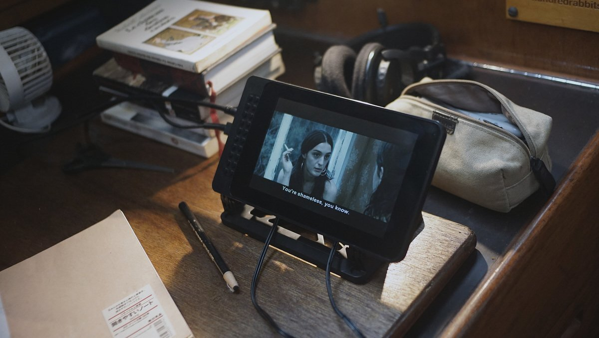
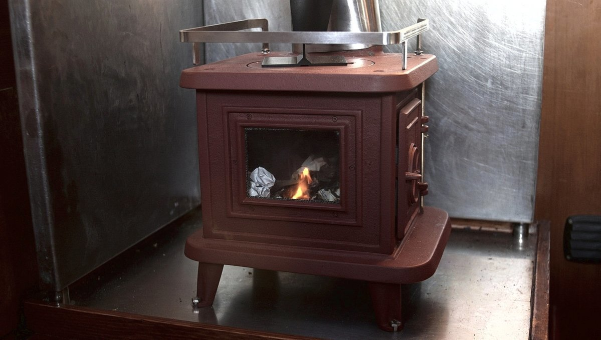

off the grid
- water
- rain catchment
- water filtration
- shower
- power
- provisioning
- productivity
- medical
- internet
- formalities
- money
- lpg
- waste
- distractions
- radio
- setup
- hardware
- software
- data storage
- heating
People choose to live off-grid for self-sufficiency, resilience, or ecological reasons. For us, to live off-grid, is mostly letting go of the numbing culture of convenience and surrounding ourselves with systems we trust for long transits across the ocean. When far away from the coasts, we rely on our vessel and what's on it. When something breaks, we must repair it. We found that learning to live in communion with our vessel offered a peace of mind previously unimaginable.
Maslow's pyramid of needs positions as the most basic, or most crucial, physiological needs, like water, food, warmth and rest, followed closely with security and safety. Meeting these basic needs, while living offgrid, takes but some planning and time.
water

It's easy to forget that water is not inexhaustible when it flows so readily by the turn of the tap. Living on a boat certainly helps to develop a deeper connection to this precious resource. Depending on where you are, you'll have to treat it, catch it, carry it or pay for it.
Basic needs are covered with a mere 10 liters of water a day per person. A person needs between 2.7 and 3.7 liters of drinking water each day. When anchored near a port, once a week, we would ferry four bins of 10 liters from shore to the boat. To conserve water, our sink faucet is operated with a foot pump, where each push draws out 60 ml of water, allowing us to measure our usage.
On passages, we carry extra Jerrycans of water, enough to sustain two people for a few more weeks than the length of our trip. Having separate bins makes for a more resilient system, if salt gets into one tank, it won't corrupt the entirety of your supplies. A sure way of preventing contamination, is to check all o-rings and tanks for leaks before leaving. We chose not to have a desalinator aboard Pino, and have managed well without it. It's a device that is expensive, high maintenance and power-hungry.
Related: water storage, water filtration & rain.
rain
Rain catchment is a good way to top-up your tanks. Some sailors set up tarps to catch and lead the water into Jerrycans, others have the water flow directly into their main tank — I don't recommend doing that unless you've got a good filtration system. When it rained, we'd collect water trickling down from our aft solar panels into a 20 liter bucket. We collected this extra water for showers, laundry and washing dishes.
While the rain itself might be safe to drink, it carries dirt or whatever may be on your tarp, or deck. And depending on where you are, the rain may have environmental pollutants mixed in. For these reasons, I recommend using rainwater for purposes other than drinking and cooking. If you are to drink it, it's important to boil it first for at least 1 minute, or to run it through a good filter. See water filtration.
Even if you don't plan on drinking it, it's a good idea to treat the water you catch. The easiest way to do this is to add chlorine bleach to your supply. It is the most reliable treatment method. This is something we've done, and continue to do. The suggested ratio of chlorine to water is 2 drops bleach for 1.15 liters (1 quart). The above ratios are for bleach containing 5.25% Sodium Hypochlorite. This amount depends on the concentration, the ratios will be different for 5.25% than for 8% chlorine bleach (1 drop: 1.15 l). Only use regular, unscented chlorine bleach products that are suitable for disinfection and sanitization, as indicated on the label. A good way to remember these ratios, is this saying:
“You must be 21 to drink”.
2 drops of bleach per 1 liter (quart) water, easy to remember. Note that 1 quart is slightly less than 1 liter.
water filtration

If we have a tap near the boat that permits the use of a hose, we hook a twin set of filter housings in the line to purify the water. The 1st stage filter is pleated, and removes sediment, silt, dirt, rust, and other particles, and the 2nd stage carbon filter reduce the content of chlorine, concentration of toxic heavy metals, natural organic matter and oil products.
When we don't have access to pressured water, we filter the water by gravity (see our gravity water filter). We carry a pair of black Berkey purification element filters, a cost-effective way to remove chlorine (inc. chloramines), heavy metals, pharmaceuticals, VOCs, parasites, viruses, pathogenic bacteria, herbicides/pesticides, and hundreds of other contaminants from the water without removing the beneficial minerals, and without the use of any electricity.

Each element is designed to purify approximately 3,000 gallons of water before needing replacement, so they last a long, long time. We built our own filter holder (above photo), and strain contaminants in the water by gravity (a container over a bucket, with the purification elements in the top bucket, transfering clean water to the bottom bucket. Bottom bucket ought to have spigot).
For low-tech options, check out this ceramic filter, or the 3 bucket water filtration system. We aimed for the most compact, and practical system possible, even if it isn't the cheapest.
shower
Coastal locations like marinas and public beaches often have fresh water showers for local swimmers or marina guests. Usually free, or available for use at a nominal fee (1-2$ for 5 minutes). Most times these showers operate on a timer. We don't have a shower system on pino, the space doesn't allow for it and besides, we think it would use up too much water when at anchor.
In the summer, or when in warm places, we use a pressurized sprayer as a shower. It uses little water and can be found in most hardware stores. During our north pacific ocean crossing, we use the pressure sprayer to wash dishes to further save on water. When showering on the boat we don't use soap. When water is scarce, we bathe in salt water, and rinse with fresh water.
In the winter, if we have no land access we heat up water on the stove and clean ourselves with a bucket and rag. We don't shower daily, maybe twice a week (depending on activity level).
power

Halving requirements is the same as doubling capacity.
- Nigel Calder
There are working alternatives to most powered devices on a boat. Keeping consumptions low reduces the need for extra solar, keeping costs down and reducing the amount of things that can break, or fail.
To measure current power usage, make a list of indispensable electric systems and their energy requirements, including lighting, appliances, laptops etc. Look up their power usage in watts, for example, a Macbook Pro (models vary) might draw 60 W when in use. If in use for 6 consecutive hours, it would draw roughly 360 W per day. Wattage varies depending on the task performed on the computer, for instance video editing is more resource intensive than writing. The type of computer you have affects the amount of energy consumption overall, and the more external hardware you connect to it the more power it will consume. Adding up the wattage will give a rough estimate of daily use. Batteries have an amp-hour rating that can help calculate the energy available to you, to learn more about this read about batteries.
The energy coming from solar panels fluctuates based on the angle of the sun, cloud coverage and other obstructions. Power usage aboard varies a lot from day to day, depending on what task is done that day. While on passage, our own capability to capture sunlight is reduced to keep our windage low, but our energy consumption is equally reduced for not much else is drawing power than our navigation electronics like the AIS, the wind meter, and at night, the lights.
An anchored board will orbit its anchor according to the wind, and rarely stays in the same spot and so it is difficult to position panels to guarantee an optimal draw. On cloudless days the mast may cast a shadow covering a large part of the panels. On moments such as this, or cloudy days, it is best to adapt by using appliances less, and to learn to live according to the weather.
For each 100 people telling us to "just install more solar panels", only 1 person will consider ways to reduce power usage. Instead of scaling our battery banks to our needs, we chose to adapt our needs to the available space for batteries and surface for panels. It's also important to consider that more solar panels often mean more windage. Having a complex system exposed to a harsh environment like the sea, creates opportunities for things to break. Saltwater corrosion is a very real threat. Nowadays, many electronics, or 'smart' systems, use proprietary parts, making them difficult to repair. We've encountered many boats, stuck in port for weeks and weeks, waiting for parts to arrive. An over-reliance on convenience products may bind you to services on land, in a way that you may not want.
Related: solar setup, energy & solar tips
medical

Most city-centers will have a hospital. Ones out in the islands—South Pacific for instance—tend to be good and cheap, but in most cases you must be self-sufficient. That includes a well-stocked medical supply, and the know-how to fix yourself up.
Before going offshore, if you can, we recommend doing a first-aid course. Knowing what to do in the event of severe bleeding, choking, or severe allergic reactions, could save your crew's life.
In a marine environment, it may not be possible for EMS personnel to come to your assistance in an emergency. You may need to contact a doctor and request advice on providing care, even if it is outside of your training. Read about calling for help on a boat. Document the doctor’s orders carefully.
You should prepare the following information and present it to the doctor:
- Routine information about the ship
- Routine information about the person
- Details of the illness/injury
- Care rendered and the person’s response to that care
MALARIA

If travelling into Malaria endemic areas, we carry rapid diagnostic tests. The test is 90% accurate and quickly diagnoses if Malaria is present, and if so, which one you have, so that treatment can commence quickly if needed. We relied on tests because we were close to hospitals, but if traveling to islands with no facilities it might be a good idea to also carry antimalarials (e.g., malarone).
For medicine like Malarone, it's important to start this medication 1-2 days before you enter the malarious area, to continue while in the area and for 7 days after leaving.
The best protection is prevention. Use screens on windows and doors, if you must go out in the evening or after a big rain wear long-sleeved shirts and pants and wear insect repellents that contain diethyltoluamide (DEET).
Malaria symptoms: fever, chills, headache, other flu-like symptoms.
See malaria information by country.
JELLYFISH STINGS

Stings from marine life can range from painful, to life-threatening.
If stung by a jellyfish:
- Flush the injured area with vinegar for at least 30 seconds, if vinegar isn't available mix baking soda and water into a paste and apply it to the area for 20 minutes.
- Remove any pieces of the animal, while protecting your hands,
- Immerse the affected area in water as hot as the person can tolerate for at least 20 minutes, or until the person feels less pain
Seek medical attention if there is an infection, or if the person has trouble breathing. Always flush with vinegar FIRST, before removing any part of the animal, the tentacles can continue to fire even after they're detached so you must neutralize the poison before touching them or they could inject more poison into the person.
SUNBURNS
The following precautions will help prevent sunburns:
- Limit sun exposure between 1000-1500, if possible.
- Wear light colored clothing that covers the arms, neck and legs.
- Use a broad-spectrum sunscreen with a sun protection factor (SPF) of at least 30 and apply it 15-30 minutes before going outdoors. Reapply sunscreen at least every 2 hours, as well as after being in the water and after sweating.
Take a cool shower to relieve pain. Treat mild to moderate sunburns with aloe vera gel. Apply it a few times a day to the sunburnt area.
If you have blisters, leave them. The liquid in the blisters will ensure that the skin heals well, while protecting it from infection. While the sunburn is healing, stay out of the sun, and keep the area covered if outside.
HYPOTHERMIA
There are four levels of hypothermia, from mild to severe life-threatening symptoms:
- Cold stressed, not hypothermic: conscious, normal movement, shivering, and alert.
- Mild hypothermia: conscious, impaired movement, shivering, alert
- Moderate hypothermia: conscious, impaired movement, little or no shivering, not alert
- Severe hypothermia: cold, unconscious.
- Cold-Shock Response: Rapid cooling of the skin causes a gasp followed by hyperventilation (lasting 1-2 min).
- Cold Incapacitation: Further cooling of nerve and muscle fibres causes weakness and a loss of coordination, leading to incapacitation within approximately 15 minutes.
- Hypothermia: A person dressed appropriately for the weather conditions will take 30 minutes + to become mildly hypothermic.
- Circum-Rescue Collapse: Can occur just prior to, during, or after rescue. The signs and symptoms range from collapsing, to fainting, to cardiac arrest. When rescuing a person from cold water, monitor the person’s condition carefully and be prepared to provide emergency care.
If you are in OPEN WATER you can increase your survival time while waiting for rescue by doing the following:
- With a PFD, adopt the Heat Escape Lessening Position (HELP):
- Press your arms against your armpits.
- Place your forearms across your chest.
- Squeeze your thighs together and raise your knees toward your chest.
- If several people are in the water together, adopt the huddle position:
- Face each other
- Have each person squeeze their thighs together
- Form a circle and hug each other. Each person should place one arm above and one arm below the arms of those adjacent, and pull the sides of the chests together
- Sandwich any children or persons without a PFD inside the huddle.
- Get out of the water as much as possible by using a capsized boat or other floating object as a flotation device.
Caring for hypothermia
Care for hypothermia varies depending on the severity of the symptoms mentioned earlier (cold stressed/not hypothermic, mild hypothermia, moderate hypothermia and severe hypothermia):
- Cold stressed, not hypothermic
- Reduce heat loss, add dry clothing.
- Give high-calorie food or drink (warm, sugary, non-alcoholic)
- Increase heat production (exercise, e.g., run in place)
- Mild hypothermia
- Handle person gently, keep horizontal
- No standing/walking for at least 30 min
- Insulate the person/vapor barrier (hypothermia wrap, see below)
- Give high-calorie food or drink (warm, sugary, non-alcoholic)
- Monitor until improvement for 30 min
- Moderate hypothermia
- Handle person gently, keep horizontal
- No standing/walking
- Insulate the person/vapor barrier (hypothermia wrap, see below)
- No drink or food
- Apply heat to upper torso, by applying warm water bottles, or heating pads (i.e., the armpits, chest, and upper back). Body heat from yourself can also work in an emergency
- Severe hypothermia
- Treat as moderate hypothermia
- If no obvious vital signs, do 60-second breathing check
- If not breathing, start CPR
HYPOTHERMIA WRAP

Applying a hypothermia wrap, or hypothermia 'burrito', is an excellent way to reduce the heat lost by a person with hypothermia.
It consists of layering insulation and heat-reflecting material. If help is more than 30 minutes away (common on offshore boats), protect the person from the environment, remove the wet clothing and put them in a hypothermia wrap.
To apply a hypothermia wrap:
- Insulation pad. Place it between the person and the ground/floor.
- Sleeping bag/blanket. Wrap the person, apply as much insulation as possible.
- Hat or hood. Cover person's head/neck with a toque, heavy hat, or hood.
- Vapour barrier. If the person is dry, place the vapour barrier outside of the insulation wrap. If the person is wet, place the vapour barrier inside the insulation wrap. If two vapour barriers are available, place one inside and one outside the insulation wrap. A vapour barrier can be a plastic tarp or foil blanket.
DAN BOATER
In case of a serious injury, you must have the means to get yourself to the nearest clinic. We use DAN Boater, a repatriation insurance that covers helicopter/transportation fees.
MEDICAL RESOURCES
We find that medical apps for mobiles, and FM army field manuals, are helpful when dealing with minor burns, cuts and various aches. If you have a smart phone, the Canadian Red Cross app is free, works offline, and is very good.
We also recommend:
- The downloadable guides by Riot Medicine
- A Barefoot Doctor’s Manual: The American Translation of the Official Chinese Paramedical Manual(an excellent general health manual)
internet
Internet access is the woe of any working nomad. internet is sometimes spotty, and data in some countries is slow, expensive, or limited to small blocks at a time. While circumnavigating the Pacific, we amassed sim cards, pocket WiFis, and have often used connections from businesses on land. Overtime, we found ways to lessen our dependence on the internet, and to save on bandwidth.
With limited access, it is important to use online time wisely. Prior to connecting we make a list of tasks that we must do, such as pushing updates and making backups of our data online. When searching for help online, we disable javascript and use lightweight search engines, such as ddg.gg/lite. When checking social media, we disable auto-playing videos and image previews to save bandwidth.
When we have a reliable internet connection, we gather copies of all the online material we will need. We keep offline versions of entire websites, writing guides, articles and even whole sections of Wikipedia (using wget) If we find ourselves without a connection, we can still solve our problems by using our offline mirrors. By the way, you can download our entire website.
To reduce your bandwidth usage and battery drainage, install NoScript, and uBlock on your browser; or use a text-only browser like Lynx.
We research our destinations ahead of time to make sure we’ll have a reliable connection when we need it. This means we’ll be spending less time in secluded areas, and more time in city centers near a cell tower or WiFi signal. With some planning it is possible to have both paradise and connectivity, we found such a place in Huahine (see internet in paradise) in french polynesia, and again in fiji. Internet access will only get better as far-flung island nations gain purchasing power.
formalities

Passports are a global requirement for international travel, but their value varies depending on the holder’s country of origin. Passport privilege means that a Japanese national will have free roam over all continents, while someone from Afghanistan will likely be barred entry outright. Inequalities related to passport privilege means that many will face discrimination, and will be forced through a tiresome process of applying for a visa—all of which costs money, time, and energy. It is not fair. Everyone should be granted the same rights, but wishing things to be different does little to alter reality. The best thing to do is to stay informed, and to be ready.
It is important to read about the formalities of each country before visiting, because applying for visas can take a lot of time. Some countries may grant a visa on arrival to certain passport holders, but never assume this, do your research.
Customs in certain countries (like new zealand or fiji) sometimes require an Advance Notice of Arrival. A failure to send this document before arriving might result in hefty fees. Most countries have designated ports of entry for visiting yachts, usually a port with a customs, immigration and quarantine office.
Upon arriving in the country, fly your yellow quarantine flag (we just hang a yellow cloth with clothes pins, see above picture hehe) and proceed to the quarantine anchorage, or dock. In some cases, you might have to hail the Port Authority on VHF to announce your arrival. They will not allow you to touch land until you're properly checked in. Countries like New Zealand and Australia demand that your vessel's bottom be clean (they will require proof), to avoid introducing invasive species into its home waters.
Some countries will give visa extensions, but plan appropriately and apply long before it is set to expire. If your boat needs repairs, or cannot leave due to weather, you may be allowed a short extension (for a price).
Upon entry or departure, you may need to pay the immigration, customs, health and quarantine officers. These fees are documented, it is best to learn what prices to expect before arriving. We find Noonsite to be a good up-to-date ressource for country-specific information on fees, customs or quarantine procedures.
money
Not all places have ATMs, but always have a bank nearby that will take a VISA card. In the islands we prefer to pay in cash, a lot of places, like fresh food markets, don't accept credit anyway.
Better make sure that your credit card will not be blocked when used in foreign countries, and that it will expire at a location that will allow for you to receive a new one.
lpg

In our galley, we use LPG (Liquefied petroleum gas) to cook by way of a gimballed stove. While not an ideal fuel, there are few alternatives for sailboats.
The stove is fueled by a 9 kg (20 lbs) with a backup 5 kg (11 lbs) tank. pino houses two tanks with only one tank connected at a time, this way we can get a tank filled while the other is still in use. One 5 kg tank can last us two months, and less if we bake a lot, and a 9kg (20 lbs) tank which can last us 4-5 months.
Many countries don't want to refill foreign tanks, especially if they have an aged appearance. Throughout our travels we had to give up 3 tanks, 1 in New Zealand and 2 in Japan.
Our main tank lives in its own locker aft of the boat, with a drain hose leading down and off the stern. In the event of a leak, the gas will escape from this hose rather than filling the compartment and slipping down into the bilge. Our boat has a solenoid valve with a gas shut off that we can operate from inside the cabin, it is fitted with a sniffer and alarm to detect leaks. For safety, solenoids close in the event of a power failure. An LPG tank should never be stored inside. We store our secondary tank off the aft rail on a little platform we built.
Tank compability. In 2022, we switched out all of the old components of our propane system (regulator, solenoid, pressure gauge and hoses) because they were thoroughly rusted (solenoid and pressure gauge, especially). The pigtail that connects to the propane tank though is different, and screws onto the mouth of the valve from the outside, rather than from the inside, unlike our older connector. Our Japanese tanks can only take an inside connection. Be mindful of this when changing systems, industry standards change.
Tank swaps. Many countries use a 'tank swap' system. You bring your tank when it is finished and swap it with another. This is a good system because the tanks are often made of painted steel and can corrode over time, especially if exposed to salt air. When swapped at a store, the steel tanks are re-painted and checked for problems, eliminating the need to do those checks yourself.
Keeping your own propane tank. If you prefer to have your own tank, a good alternative are aluminum or fibreglass tanks—although many places won't want to fill fibreglass tanks. If using your own tank for a while, you might run into issues with an overfilled tank (it happened to us). When exposed to the sun on a hot day (if the tank is outside), the gas inside of the tank expands and will open the pressure release valve. Some LPG will escape from the valve to relieve the pressure in the tank. Don't handle the tank as it is off gassing. If the smell bothers you, pour some cold water over the tank to help it cool faster. The pressure release valve will close when the pressure has lessened, but may not with a faulty tank. To check for leaks on your tank, pour some soapy water over the tank. Bubbles will form around the leak.
distractions

When anchoring, it can be difficult to stay focused. The weather decides everything. It determines whether or not we can work. If the weather is foul, we are on anchor-watch to make sure we don't drag.
Waves also make it hard to do simple tasks like writing, or drawing. Depending on the direction of the wind, we need to move the boat and that too, takes focus and time away from work. Calm and sunny days are distracting in other ways: when the water is clear and teeming with colourful fish, it is difficult to resist jumping off. All in all though, we welcome these interruptions, as it ensures we take enough work breaks.
provisioning

While modern grocery stores can be found in larger cities, these can often be far apart. In smaller towns, fresh vegetable and fruit markets are seldom open everyday, most only once a week. We picked up the habit of buying food in large quantities.
Aboard Pino, we have no refrigeration (read our notes). Canned, dried or shelf-stable foods are a good alternative to this.
Canned foods: Canning doesn't preserve many nutrients in food, but in a bind in can be a useful way to carry food, although cans can rust through overtime (we've had this happen). We remove tags so they don't draw moisture, and label the cans with a marker pen. Our favorite canned foods are: tomato paste, artichokes, jackfruit, maple syrup(!!!), black olives, corn niblets and chipotle peppers. Buy an assortment of cans, find ones which suit your tastes. We usually look for cans without added salt or sweeteners.
Dry foods: Dry food will keep for a long, long time on ocean passages. We keep a variety of dried grains, but also dried vegetables since we don't have refrigeration. Dried veg keep well in air-tight containers, their nutrients are preserved, and add variety to dishes. We add dry vegetables to boiling pasta to re-hydrate them. Dry mushrooms like shiitake, and kombu(algae) are a great base for broth. Our favorite dry foods are nori, kombu, dried tomatoes, raisins, dates, TVP(textured vegetable protein), shitake, dry tofu, rice cakes, radish etc. We stock many types of whole grains (buckwheat, whole wheat, cornmeal, oats). Different grains offer different nutritional profiles, and meal options. To read more about how we store food, see food storage.
We like to buy flour in bulk. We keep it in separate jars (each accommodating a 2 kg bag). Keeping some types of flour separate helps to avoid problems, like weevils. If one batch is contaminated, the other might be fine. Keeping the whole grain version of those flours, like wheat berries, is even better because they last longer, but then it might be necessary to carry a grain mill (see our grinder).
Shelf-stable foods: Shelf stable food kept in tetra-paks are useful to keep perishable goods. Our favorites include tofu and plant milks.
Provisioning can be expensive in certain countries, so stocking strategically with cheaper stores, ahead of time, can help to save money. If you're shopping and you see something you like at a good price, buy tons of it, chances are you won't be seeing it again on your next visit (turn-arounds are quick in some stores, and won't re-stock the same items again).
Preserving food, via lactofermentation, or canning, is essential when traveling on a budget. A pressure cooker and glass jars will save you money and will help reduce waste. Preparing your own stores, also means that you choose what goes in it, therefore reducing your intake of added salts and sugars.
productivity

Our work schedule is tied to the weather, as we depend on solar energy to power our computers. By looking at the forecast, we can determine when we will get the most work done: consecutive days of sun grant us enough power for video editing, while overcast days are reserved for low-power work, like writing, coding and planning.
In the constraints of expensive cell phone data, uploading large files can be made possible by offloading heavy-lifting onto remote servers; having your server build and upload your projects instead of using your laptop batteries and broadband.
There is no solution to uploading videos to YouTube, it's a costly and lengthy process. When we make videos, we keep them under 5 minutes to help reduce upload time.
We work less, by keeping our needs small. We both cannot deal with working within rigid schedules, and we both know that we find our best selves when working close to nature.
radio

Onboard Pino we carry a fixed marine VHF radio, a handheld VHF and two transceiver Walkie Talkie two-way radios. VHF/UHF radio waves travel in straight lines (line-of-sight) generally cannot travel beyond the horizon. VHF (very high frequency) is the designation for the range of radio frequencies from 30 to 300 megahertz (MHz)
A marine VHF radio is an important and reliable for bidirectional voice communication both for ship-to-ship and ship-to-shore. In Canada, a Restricted Radiotelephone Operator Permit is required to transmit, it is unlawful to operate a ship station that is not licensed. The handheld marine VHF has the same functionalities as the fixed version, but is equipped with DSC(Digital Select Calling).
We sometimes use the two transceiver two-way radios to talk to each other from shore-to-shore, an Amateur Radio License is required to broadcast with this type of radio in Canada. A license ensures that new users are aware of the existing regulations and don't broadcast on reserved frequencies.
setup
We carry many devices onboard, some for everyday tasks, while others are reserved for low-power situations.
Most of our computers are secondhand, donated to the studio between 2017 and now. We'd like to thank the following people: Josh Auget for the x250Thinkpad, John Eternal for the MacbookPro 2010, Brian Crabtree for the Pinebook, and Lloyd Williams for the MacbookAir 2011.
Main work stations:
- MacbookPro 2010 running Manjaro
- x250 Thinkpad running Manjaro
Low-power work stations:
- Pinebook running Manjaro
- ChromeBook running ChromeOS(media station)
- Macbook Air 2011 running Manjaro
- RaspberryPi running Plan 9
hardware
Computers are subject to water intrusion and saltwater corrosion, but with some care they can survive in a normal marine environment. We solved most of the problems by cleaning external connections often, and by storing them in a sealed box with some desiccants after each use. The main issue with computers on boats is that it is difficult to source parts when they break. To make matters worse, many modern machines have non-replaceable batteries, proprietary storage, and soldered-in RAM. The parts that fail the most are power connectors, external connections and batteries.
Leaving a port with spare parts is a good tactic, but leaving with backup PCs is even better. There are many good inexpensive computers on the market, like notebook processors (Pinebook, EeeBook) and single-board computers (Raspberry Pis, Pine64). We carry 3 extra raspberry pi computers as backups to our main setup, as they are inexpensive and small. These computers run on lower voltage, which lower overall power consumption. By consuming less power, the system will be less expensive to run, but more importantly, it will run much longer on existing battery technology.
Carrying a spare battery isn't a great idea as you may not use it right away, and that its literal age also affects performance. Computers are rated for a limited number of cycles. If you drain the battery completely and recharge it every day, it'll be spent after 3 years. Keeping a laptop battery fully-charged is important as it draws a lot more power at half-charge, the last few percentage points are much lower wattage to float/top it off. Enabling the various power states in your computer settings can also reduce power consumption, which in turn spares your battery. If available, enable 'eco-mode' or 'low power mode'. We suffered battery failure on multiple laptops, read about it in tools ecosystem.
When parts fail on our boat we repair them, and we do the same for our PCs. Nowadays it is commonplace to trash a device when it stops working, contributing to the growing problem of e-waste in the world. Replacing broken components is important, as manufacturing a new PC makes a far bigger ecological footprint than manufacturing a new replacement part. If you must get a new PC, look for product longevity, including upgradability, repairability and modularity. In today's climate, making electronics last longer is crucial.
software

Software has a big impact on productivity, they need to be reliable and fast. Those that require heavy updates, that have a high CPU usage and that need frequent connectivity to function are problematic for us. Much of the software on the market is designed by people living on the grid with unlimited access to internet. Tools locking up at sea, asking for a connection to continue working don't float on a boat. Adobe products are a good example, as they require an internet connection periodically for subscription validation. If away from big cities, you may open your computer in an atoll to find that you no longer have access to the tool you need to get things done. Choosing a tool that doesn't require a subscription is essential for working nomads that don't have a reliable connection.
Have a look at cpulimit to learn how to throttle running software and control the battery drainage rate.
In our first year, we struggled to download 10gb software updates on slow Polynesian internet. Processor-intensive software or apps is a strain on limited power and bandwidth, but it doesn't have to be that way. The way developers write them can affect the power consumption of the resulting product. Chat rooms and bare bones text editors aren't supposed to be process-heavy, and yet the popular communication platform Slack requires outrageous amounts of ram and CPU to function. This is because Slack is embedding the entirety of Google Chrome in their app. Making software this way is costly to off-grid users, or those on slow connections, but luckily there are many alternatives. See TinyTools and Bloatware Alternatives.
Our computer batteries should not need to grow ever larger only to support these bloatwares, nor should we need to add extra solar to power them. Just as you would look at the nutritional content of food products at the grocery store, find out how much energy your apps are consuming.
data storage
Hardware failure is common on boats due to the hostile environment. Saltwater is the kryptonite of electronics. This is why it is important to backup data often to avoid losing work. There are advantages and disadvantages with all methods of data storage, but I’ll outline the most useful ones:
Cloud storage: For a fee, you can back up your data online and sync files from your desktop. This method doesn’t eliminate physical storage as data can’t be synced to the cloud without a connection. Offloading data storage to a centralized service is problematic in other ways, because services have rules and owners and processes which can complicate things. For instance, country politics have made it so that Google restricts access to some of its business services in certain countries or regions, such as China, Crimea, Cuba, Iran, Sudan, and Syria. Whatever data you have stored with Google Drive, if traveling to any of these countries will not be accessible. As conflicts arise, more countries can end up on that list. We keep documents we don’t need regular access to on the cloud, with copies on hard disks.

Hard copies. Paper is evidently a stable and widely accessible material, unlike digital devices which are subject to breakages and obsolescence. There's a good reason books and other documents from centuries ago are still readable today. We like to keep printed copies of websites and other online reference materials, such as grammar guides for writing, or language manuals for coding. Our to-do lists and calendars are also on paper. Keeping data like this means we always have access and aren't limited to our computer's battery. We protect hard copies from moisture and rot, we keep documents in plastic sleeves, or sealed up in plastic boxes.

External hard drives: A hard drive is the best balance of practical and reliable storage. However, hard drives are rated for a limited number of read/write cycles, and can be expected to fail eventually. To prevent data loss due to HD failure, it’s a good idea to store the same data across multiple hard drives.
Offline databases: Keeping an offline collection of websites on computers or HD ensures constant access, and reduces the energy associated with re-loading them repeatedly. It’s possible to save web pages with most browsers by selecting File > Save Page As. To access the page offline, click on the HTML file. Another option is to mirror entire web sites using command-line tools. We keep offline databases full of notes on a variety of subjects to refer to when there’s no internet.
For those who need a vast quantity of reference materials, it's possible to setup an internet in the box on your boat. In short, it permits you to browse through the World’s Free Knowledge (Wikipedia, Khan Academy, OpenStreetMap, E-Books and many others) while offline. You can install an internet-in-a-box using very diverse hardware, like on a Raspberry Pi or on a terabyte HD with a built-in hotspot. This system was originally designed for students with restricted internet access and people in remote areas of the world not served by broadband. You can buy one, or better yet create a digital library filled with content tailored to your needs. This might be especially useful for sailors who homeschool.
Keeping files on the cloud, on hard drives and hard copies gives our floating studio the redundancy required to ensure reliability.
heating

Cruising in cold places means that you need a reliable way to heat your boat. A system that uses no, or little power is preferable.
Carbon Monoxide. With heating in small spaces a C0 detector is essential, as is good air circulation. Always keep a hatch open so the air can keep moving, with proper ventilation, the gas is carried harmlessly away. Carbon monoxide binds to the red blood cells 200 times better than oxygen. As carbon monoxide attaches to red blood cells, it keeps oxygen from properly binding. The symptoms of carbon monoxide poisoning can be very similar to those of the flu (headache, dizziness/light-headedness, confusion/altered levels of responsiveness, weakness or fatigue, muscle cramps, nausea/vomiting & chest pain). If you suspect C0 poisoning, exit and ventilate the area.
Dispersing heat around the space is difficult on a boat, but not impossible. Caframo thermoelectric EcoFans make use of the heat generated by the stove to push air around without using electricity.
When talking about space heating, we tend to forget that our own bodies are heating appliances too. The largest part of heat loss occurs via the skin, and wearing sufficient clothing prevents body heat from escaping into the environment. Insulating our bodies is more efficient than insulating the space they're in, requiring only a small layer of air to be heater as opposed to warming all the air in a room to achieve similar results. In winter, thermal clothing is a very smart idea.
Before an emergency strikes in the winter, make sure you've got a way to warm your home. For a boat, consider building a copper coil alcohol heater. See instructions here(GoogleDrive document, 2 MB).
Below are the heating systems we're most familiar with, having had both aboard pino:
Diesel-fired forced hot air heating system: Forced air heaters are fitted with an electrically powered fuel pump, flame ignition device, forced draft combustion chamber and heat exchanger, fuel metering pump, and integrated control unit. Hot air is circulated through the boat via flex tubes to vents. They are compact, fuel efficient and make use of an existing fuel onboard(diesel). The downside is that they are not cheap, they use a lot of power on start-up, and they need to be run often otherwise they will clog up.
Solid fuel stove: A solid fuel stove requires space, a chimney on deck, and considerable heat shielding, but is a good option to heat a boat without electricity. A solid fuel stove also doubles as a cook stove, serving as a backup to the main stove. Solid fuel stoves on boats will likely be very small, and will have to be stoked often(esp wood stoves). Another thing to remember, is that you'll need to have space to store wood, or charcoal. Charcoal should be stored away from the stove in a metal, air-tight container. Wood should be kept dry, and cut small to fit into the small firebox. An option to keep wood is pressed wood logs, made entirely of wood byproducts from sawmills. They have long burn times and occupy less space. See our woodstove.

Woodstove tips:
- Prime the flue on start-up. Light a candle and place it inside the stove near the opening of the flue to help dissipate cold air that may be lingering inside. Cold air in the flue can cause smoke to back flow in. Another good trick is to wad up newspaper tightly, light it, and to aim it inside the opening of the flue.
- How to clean glass window of stove. Wetting a bit of newspaper and dipping it in ash is a good trick to remove build-up on glass windows. Moistened brown paper and ash also works.
- How to avoid creosote build-up. Buildup is the result of smoldering fires, which produce a lot of smoke because of the lack of oxygen. Wet wood and other types of wood are other culprits. There will be very little creosite if the fire burns hot until all wood is combusted, and if the dampers are turned down, allowing the coals to slowly burn out.
- What to do in the event of a chimney fire. If you ever have a chimney fire, put a bunch of wet newspaper in the firebox to smother the fire and also to steam up and smother the flue.
- Banking a fire. Banking a fire is an art. The basic idea is to burn the logs from one side. You can do this by coal placement, wood placement, using ash to block off one side, log size and even wood type. The idea is to make the fire burn hot but long by burning from one side only so that it burns well, but slower because it burns from one side of the log to the other instead off all the log at once. (Last three tips courtesy of Kyle P. Cunningham)
waste
Waste is always a tricky topic for boaters, because it’s something you’ve got to deal with. Keeping surrounding waters clean and free of contaminants is important. The primary environmental concern with sewage is not the urine, which is somewhat sterile, but feces which contain bacteria, pathogens, and nutrients, and should not go overboard.
Human urine and ocean water are mainly water, sodium and chloride ions. One compound found in urine that is not found in the ocean is urea, a carbon-based compound that helps the body rid itself of nitrogen. The nitrogen in urea combines with ocean water to produce ammonium, a compound that acts as food for ocean plant life.
Most sailboats have marine heads that use either fresh, or salt water. They can be powered, or make use of manual hand pumps to suck in water to evacuate sewage. Typically, the head is routed through a 3-way valve (Y valve) that can be switched to empty directly overboard by way of a thru-hull, or into a holding tank. A macerator lies between the tank and thru-hull, its job is to break up the sewage into tiny particles.
We don't recommend a fresh water head on a boat. Flushing with fresh water accounts for nearly a third of household water consumption, and that doesn't make sense in a small space. All onboard tankage ought to be used for cooking, washing or drinking. Marine heads that use sea water are better, although they will require more maintenance.
The word waste doesn’t exist in nature. Waste is not a word fit for the 21st century and the ecological society we’re trying to build. We are the only animal that deliberately mixes water with our own waste. That’s important because you create such a treatment issue to clean that water up. It’s ecological insanity. — Fin Jordão
A holding tank may only be emptied, from at least, 3 miles from shore. Pump-out stations will help you get rid of sewage, but are only available near a handful of cities.
A dry toilet is a good option for those who do not want to haul anchor and head offshore to flush their tank. A dry toilet separates liquids and solids. Solids are mixed into a medium that will wick up moisture, eliminating smells. Having a dry toilet aboard frees up much-needed space. It also means no holding tank to empty, no smelly hoses to unclog, and little to no maintenance. You can build your own dry toilet or buy one of the many models on the market. On the market most dry toilets are referred to as 'composting heads' despite the fact that they are not designed for true, full composting onboard. Humanure needs 12-24 months to become pathogen free, and few sailboats have the carrying capacity for this. Read more about dry toilet systems on boats.
See our dry toilet installation.